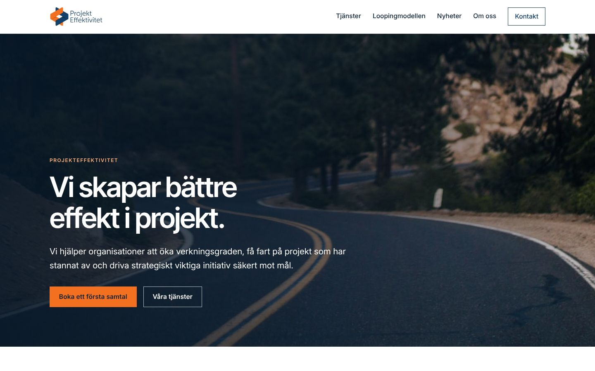
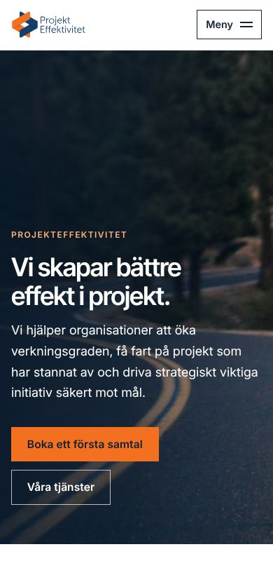
Stil 1 av 10
Kärna
Varumärket som det är – städat. Marinblått och orange, fotografisk startsida, raka linjer.
Förhandsvisning – ny webbplats
Tio designstilar, samma innehåll
Varje stil är en komplett webbplats med samma innehåll: startsida, tre tjänstesidor, Loopingmodellen, Om oss, nyheter med 6 artiklar, kontakt, integritetspolicy och 404-sida.
Vald stil: Landskap. Öppna webbplatsen i Landskap.
Byt stil på vilken sida som helst med väljaren nere till vänster – du hamnar på samma sida i den andra stilen.


Varumärket som det är – städat. Marinblått och orange, fotografisk startsida, raka linjer.
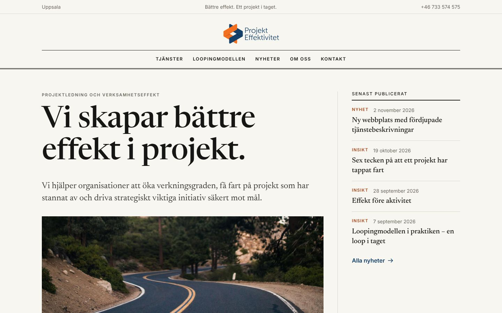
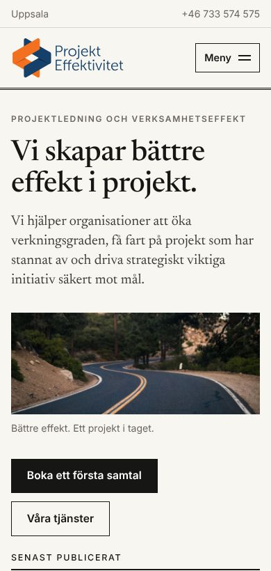
Som en fackpublikation. Seriftypografi, spalter, tunna linjer och nyheterna i fokus redan på startsidan.
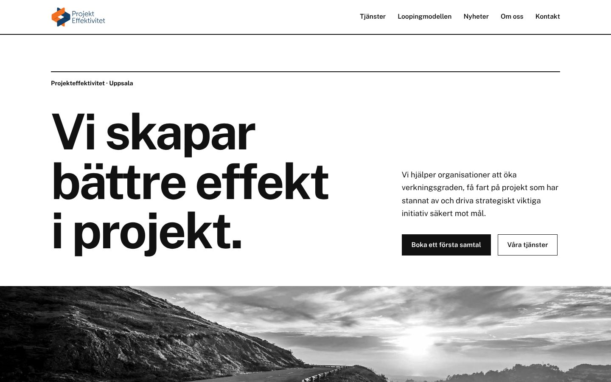
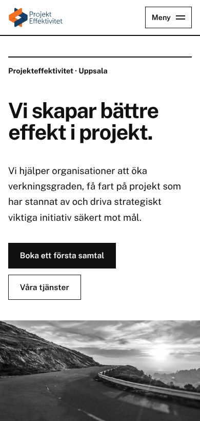
Schweizisk typografi. Strikt rutnät, stor grotesk, svart och vitt med orange som enda signalfärg.
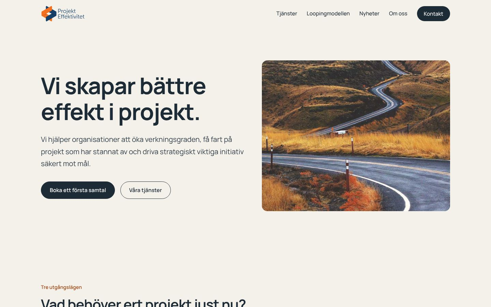
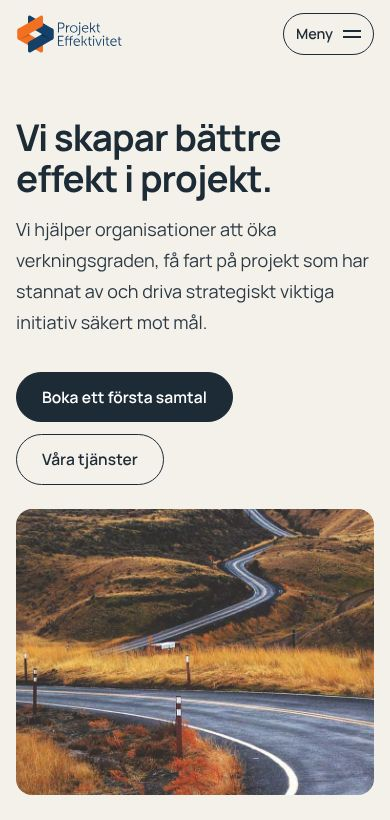
Ljust och lugnt. Varma stentoner, mjuka former och gott om luft – utan att tappa allvaret.
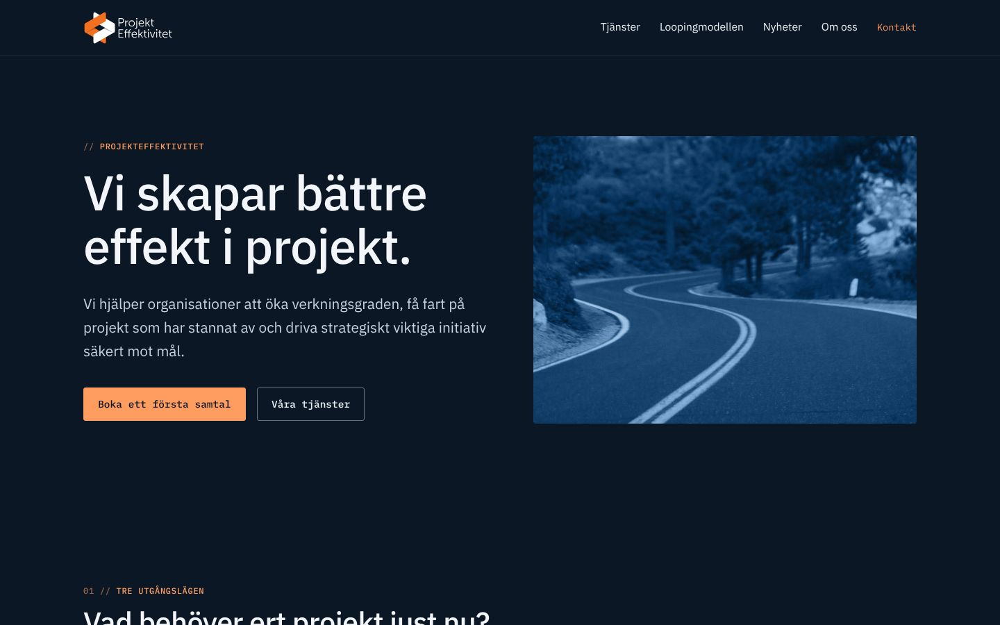
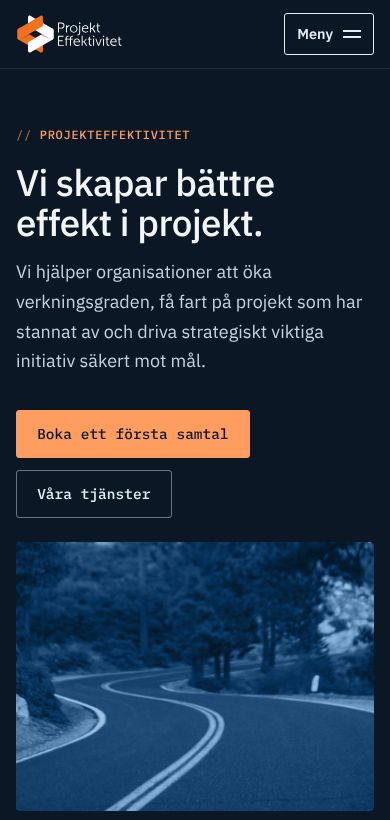
Mörk och exekutiv. Djupt marinblått, IBM Plex och tekniska detaljer i monospace.
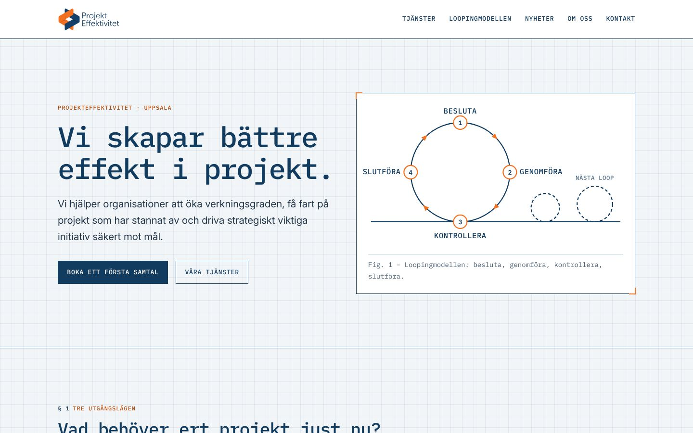
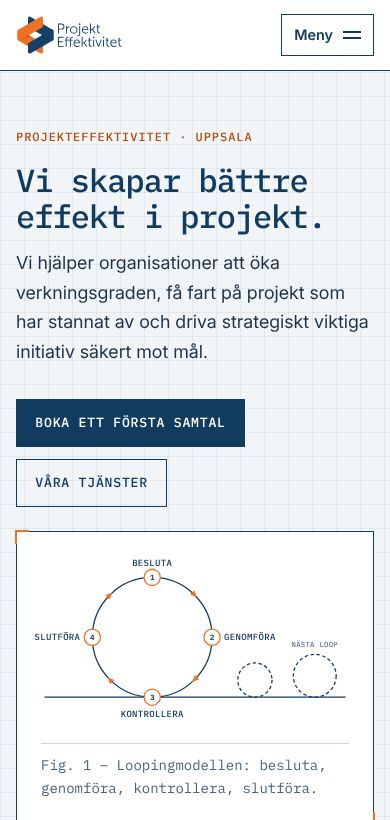
Teknisk ritning. Rutpapper, måttlinjer och numrerade avsnitt – projektledning som ingenjörskonst.
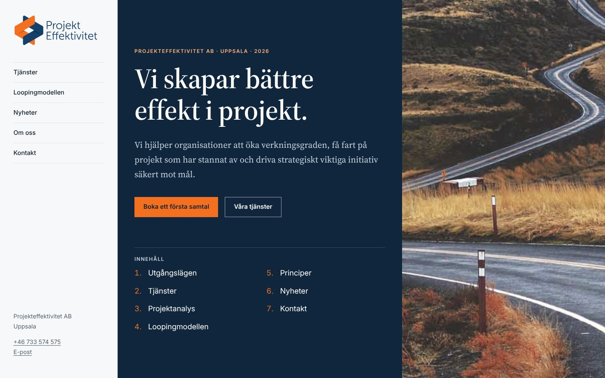
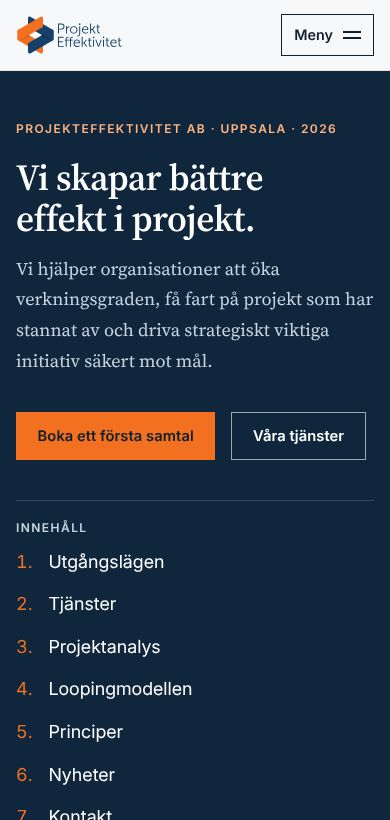
Som en genomarbetad rapport. Fast sidomeny, numrerade kapitel och lättläst brödtext i serif.
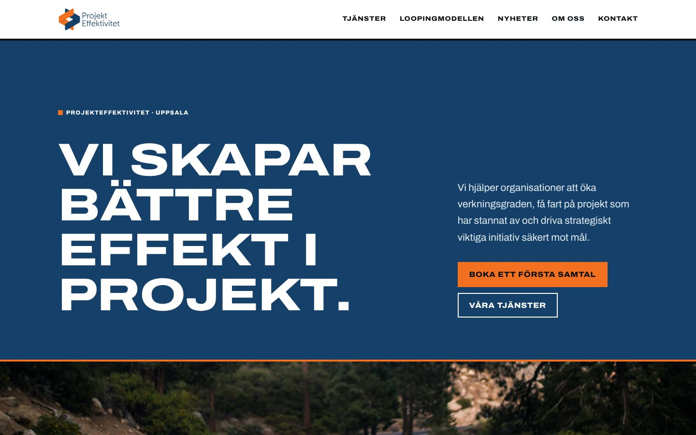
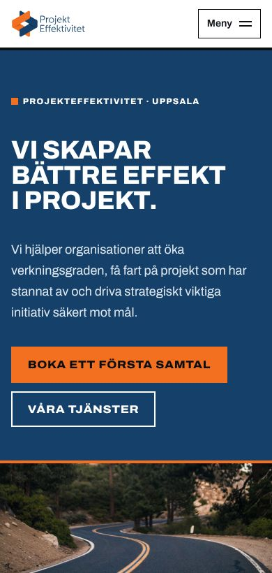
Stark och tydlig. Bred grotesk i versaler, stora färgfält och kraftiga linjer.
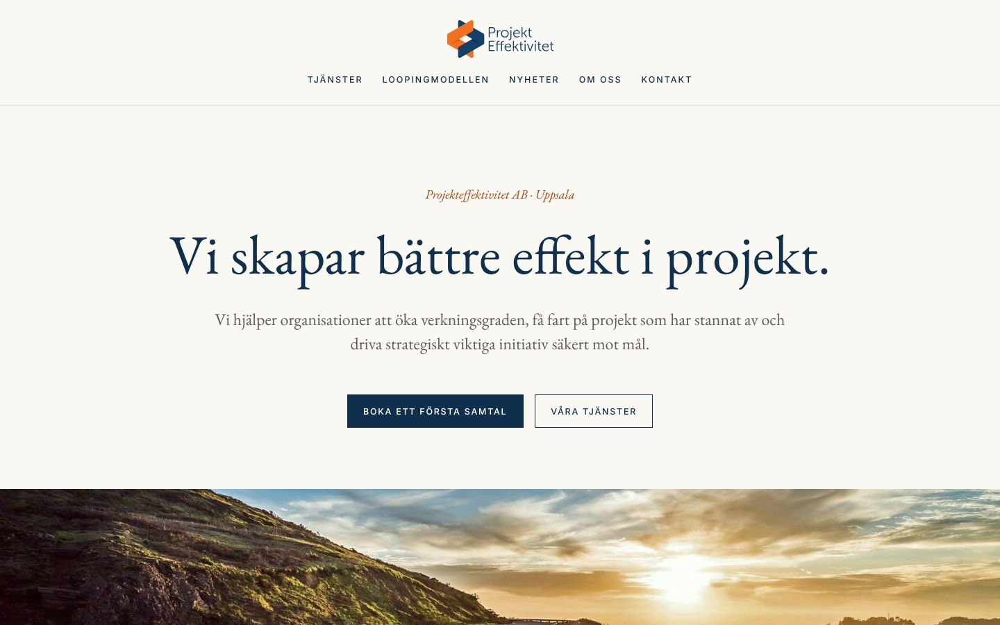
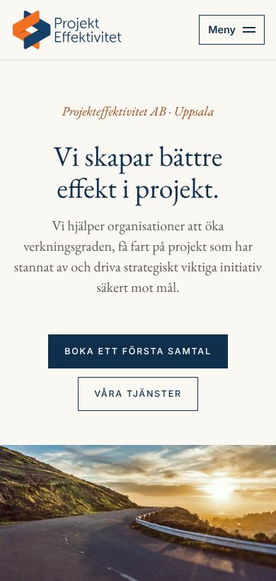
Den etablerade rådgivningsbyrån. Garamond, centrerad komposition, gräddvitt och marinblått.
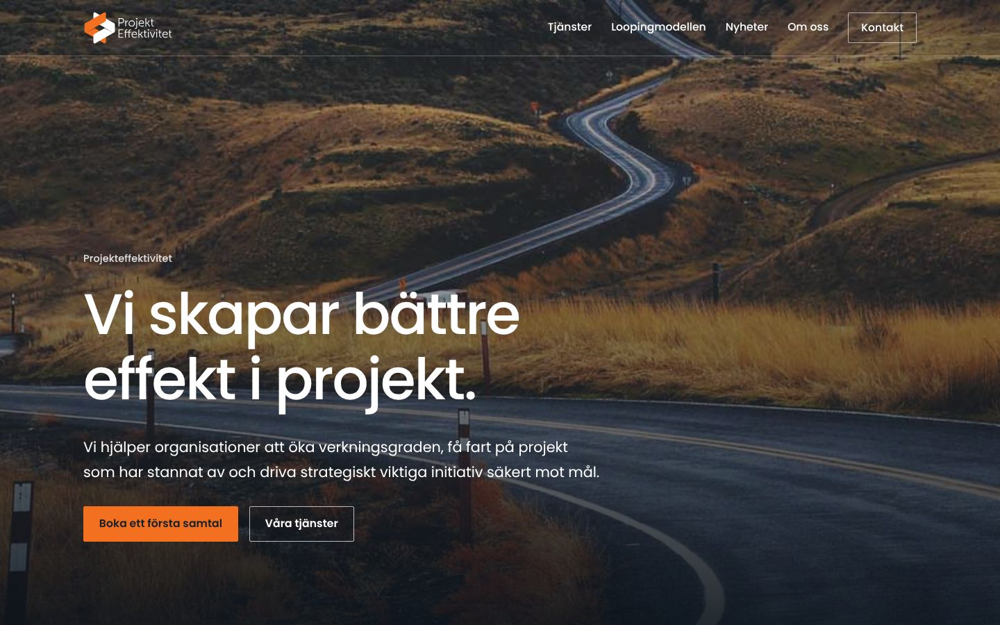
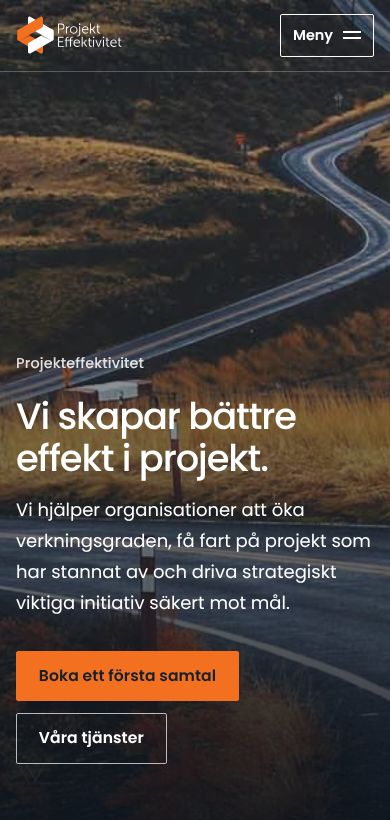
Vägen som berättelse. Helsidesfotografier, transparent sidhuvud på varje sida och Poppins genomgående.